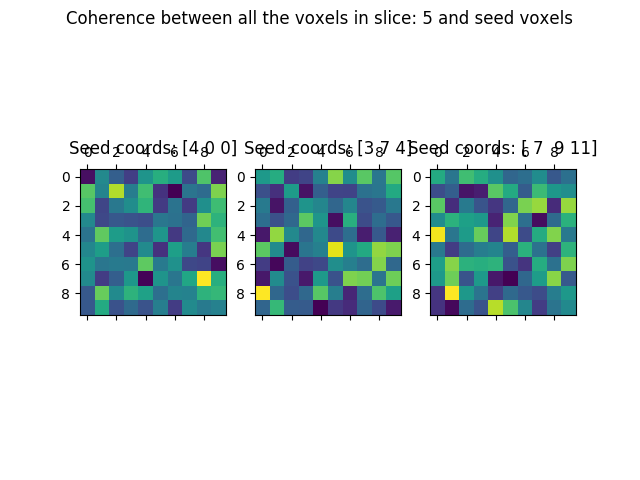
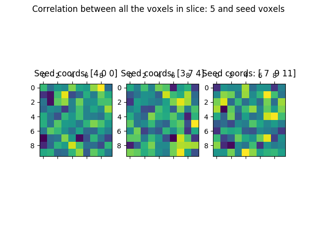

Seed correlation/coherence with fMRI data¶
Seed-based analysis is the analysis of a bivariate measure (such as correlation or coherence) between one time-series (termed the ‘seed’) and many other time-series (termed the ‘targets’). This is a rather typical strategy in the analysis of fMRI data where one might look for all the areas of the brain that exhibit high level of connectivity to a particular region of interest.
We start by importing the needed modules. First modules from the standard lib and from 3rd parties:
import os
import numpy as np
import matplotlib.pyplot as plt
Notice that nibabel (http://nipy.org.nibabel) is required in order to run this example, so we test whether the user has that installed and throw an informative error if not:
try:
from nibabel import load
except ImportError:
raise ImportError('You need nibabel (http:/nipy.org/nibabel/) in order to run this example')
The following are nitime modules:
import nitime
import nitime.analysis as nta
import nitime.fmri.io as io
We define the TR of the analysis and the frequency band of interest:
TR = 1.35
f_lb = 0.02
f_ub = 0.15
An fMRI data file with some actual fMRI data is shipped as part of the distribution, the following line will find the path to this data on the specific setup:
data_path = test_dir_path = os.path.join(nitime.__path__[0], 'data')
fmri_file = os.path.join(data_path, 'fmri1.nii.gz')
Read in the data, using nibabel:
fmri_data = load(fmri_file)
Notice that ‘fmri_data’ is not an array, but rather a NiftiImage object. Nibabel cleverly delays the actual allocation of memory and reading from file as long as possible. In this case, we only want information that is available through the header of the nifti file, namely the dimensions of the data.
We extract only the spatial dimensions of the data, excluding the last dimension which is the time-dimension and generate a coords list:
volume_shape = fmri_data.shape[:-1]
coords = list(np.ndindex(volume_shape))
We choose some number of random voxels to serve as seed voxels:
n_seeds = 3
# Choose n_seeds random voxels to be the seed voxels
seeds = np.random.randint(0, len(coords), n_seeds)
coords_seeds = np.array(coords)[seeds].T
The entire volume is chosen to be the target:
coords_target = np.array(coords).T
We use nitime.fmri.io in order to generate TimeSeries objects from spatial coordinates in the data file:
# Make the seed time series:
time_series_seed = io.time_series_from_file(fmri_file,
coords_seeds,
TR=TR,
normalize='percent',
filter=dict(lb=f_lb,
ub=f_ub,
method='boxcar'))
# Make the target time series:
time_series_target = io.time_series_from_file(fmri_file,
coords_target,
TR=TR,
normalize='percent',
filter=dict(lb=f_lb,
ub=f_ub,
method='boxcar'))
The SeedCoherencAnalyzer receives as input both of these TimeSeries and calculates the coherence of each of the channels in the seed TimeSeries to all the channels in the target TimeSeries. Here we initialize it with these and with a method dict, which specifies the parameters of the spectral analysis used for the coherence estimation:
A = nta.SeedCoherenceAnalyzer(time_series_seed, time_series_target,
method=dict(NFFT=20))
Similarly, the SeedCorrelationAnalyzer receives as input seed and target time-series:
B = nta.SeedCorrelationAnalyzer(time_series_seed, time_series_target)
For the coherence, we are only interested in the physiologically relevant frequency band:
freq_idx = np.where((A.frequencies > f_lb) * (A.frequencies < f_ub))[0]
The results in both analyzer objects are arrays of dimensions: (number of seeds x number of targets). For the coherence, there is an additional last dimension of: number of frequency bands, which we will average over. For the visualization, we extract the coherence and correlation values for each one of the seeds separately:
cor = []
coh = []
for this_seed in range(n_seeds):
# Extract the coherence and average across these frequency bands:
coh.append(np.mean(A.coherence[this_seed][:, freq_idx], -1)) # Averaging on the
# last dimension
cor.append(B.corrcoef[this_seed]) # No need to do any additional
# computation
We then put the coherence/correlation values back into arrays that have the original shape of the volume from which the data was extracted:
#For numpy fancy indexing into volume arrays:
coords_indices = list(coords_target)
vol_coh = []
vol_cor = []
for this_vol in range(n_seeds):
vol_coh.append(np.empty(volume_shape))
vol_coh[-1][coords_indices] = coh[this_vol]
vol_cor.append(np.empty(volume_shape))
vol_cor[-1][coords_indices] = cor[this_vol]
We visualize this by choosing a random slice from the data:
#Choose a random slice to display:
random_slice = np.random.randint(0, volume_shape[-1], 1)
We display the coherence and correlation values for each seed voxel in this slice:
fig01 = plt.figure()
fig02 = plt.figure()
ax_coh = []
ax_cor = []
for this_vox in range(n_seeds):
ax_coh.append(fig01.add_subplot(1, n_seeds, this_vox + 1))
ax_coh[-1].matshow(vol_coh[this_vox][:, :, random_slice].squeeze())
ax_coh[-1].set_title('Seed coords: %s' % coords_seeds[:, this_vox])
ax_cor.append(fig02.add_subplot(1, n_seeds, this_vox + 1))
ax_cor[-1].matshow(vol_cor[this_vox][:, :, random_slice].squeeze())
ax_cor[-1].set_title('Seed coords: %s' % coords_seeds[:, this_vox])
for x in zip(['Coherence', 'Correlation'], [fig01, fig02]):
suptit = '%s between all the voxels in slice: ' % x[0]
suptit += '%i and seed voxels' % random_slice
x[1].suptitle(suptit)
We can now compare the results in the coherence:
{kind=link}
And the correlation:
{kind=link}
We call plt.show() in order to display the figure:
plt.show()
Example source code
You can download the full source code of this example.
This same script is also included in the Nitime source distribution under the
doc/examples/ directory.